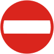
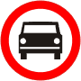
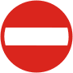
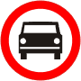

Znaki
Oznacza zakaz wjazdu pojazdów na drogę lub jezdnię od strony jego umieszczenia; zakaz dotyczy również kolumn pieszych oraz jeźdźców i poganiaczy. Umieszczona pod znakiem B-2 tabliczka T-22 wskazuje, że znak nie dotyczy rowerów jednośladowych wjeżdżających na wyznaczony na jezdni pas ruchu dla rowerów.
 


